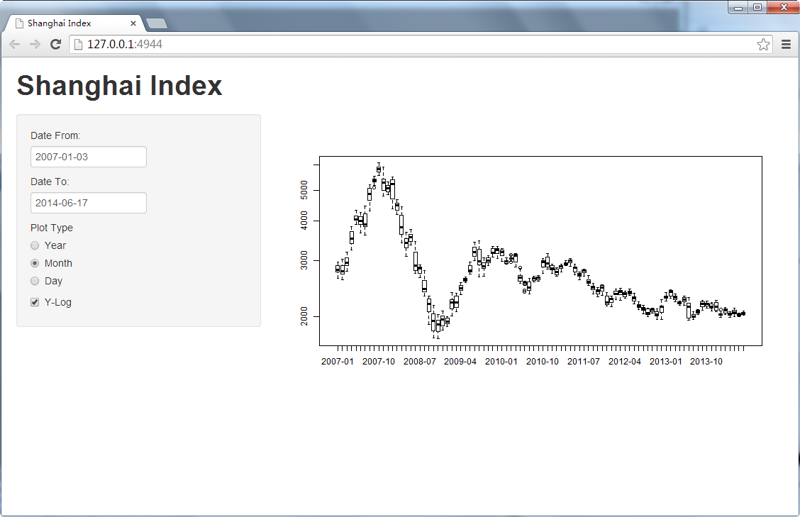

This app is built to plot Shanghai Index (SSEC)
features
- Choosing time range
- Choosing plot type
- Y-Axis can be 'Normal' or 'Log'
sharpcao
This app is built to plot Shanghai Index (SSEC)
features

library(quantmod)
library(quantmod)
getSymbols('^SSEC')
DT <- data.frame(tm = time(SSEC),Close=as.numeric(SSEC$SSEC.Close))
DT$year <- format(DT$tm,"%Y")
DT$ym <- format(DT$tm,"%Y-%m")
plot(Close~tm,data = DT,type="l",pch=19,log="y")

boxplot(Close~year,data = DT,log="y")